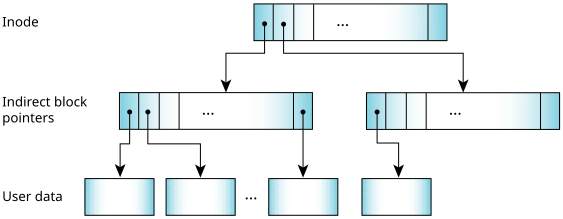
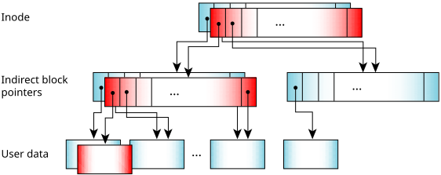
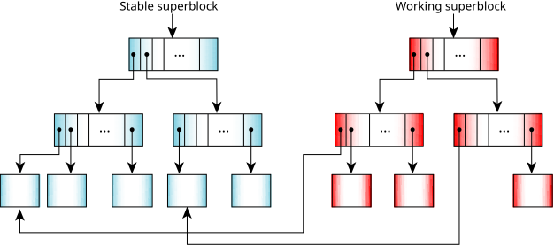

To address the problems associated with existing disk filesystems,
the Power-Safe filesystem never overwrites live data;
it does all updates using copy-on-write (COW), assembling a new view of the
filesystem in unused blocks on the disk.
The new view of the filesystem becomes live
only when all the
updates are safely written on the disk.
Everything is COW: both metadata and user data are protected.
To see how this works, let's consider how the data is stored. A Power-Safe filesystem is divided into logical blocks, the size of which you can specify when you use mkqnx6fs to format the filesystem. Each inode includes 16 pointers to blocks. If the file is smaller than 16 blocks, the inode points to the data blocks directly. If the file is any bigger, those 16 blocks become pointers to more blocks, and so on.
The final block pointers to the real data are all in the leaves and are all at the same level. In some other filesystems—such as EXT2—a file always has some direct blocks, some indirect ones, and some double indirect, so you go to different levels to get to different parts of the file. With the Power-Safe filesystem, all the user data for a file is at the same level.

If you change some data, it's written in one or more unused blocks, and the original data remains unchanged. The list of indirect block pointers must be modified to refer to the newly used blocks, but again the filesystem copies the existing block of pointers and modifies the copy. The filesystem then updates the inode—once again by modifying a copy—to refer to the new block of indirect pointers.

This has several implications for the COW filesystem:
A superblock is a global root block that contains the inodes for the system bitmap and inodes files. A Power-Safe filesystem maintains two superblocks:
The working superblock can include pointers to blocks in the stable superblock. These blocks contain data that hasn't yet been modified. The inodes and bitmap for the working superblock grow from it.

A snapshot is a consistent view of the filesystem (simply a committed superblock). To take a snapshot, the filesystem:
To mount the disk at startup, the filesystem simply reads the superblocks from disk, validates their CRCs, and then chooses the one with the higher sequence number. There's no need to replay a transaction log. The time it takes to mount the filesystem is the time it takes to read a couple of blocks.
Required properties of the devicein the entry for fs-qnx6.so in the Utilities Reference.